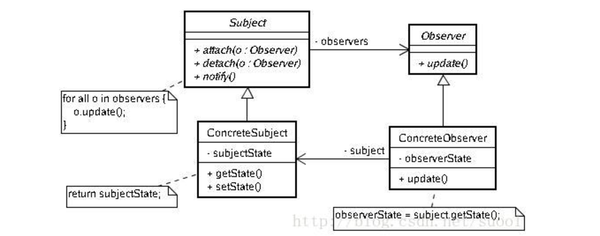

observer pattern
 * 被观察者
public class DemoObservable extends Observable {
private String param;
public String getParam(){
return this.param;
}
public void setParam(String param){
this.param = param;
setChanged();
notifyObservers();
}
}
在状态变化的时候，需要改变状态通知，然后通知观察者。 * 观察者
public class DemoObserver implements Observer {
@Override
public void update(Observable o, Object arg) {
DemoObservable demoObservable = (DemoObservable) o;
System.out.println("观察者模式，接收到改变信息："+((DemoObservable) o).getParam());
}
}
观察者需要实现update方法。一般做法需要关注下update方法实现后，是否需要把状态改回来，即setChanged(false);
- 测试类
public class TestDemo {
public static void main(String[] args){
DemoObservable demoObservable = new DemoObservable();
DemoObserver demoObserver = new DemoObserver();
demoObservable.addObserver(demoObserver);
demoObservable.setParam("123123");
}
}
- 测试结果
观察者模式，接收到改变信息：123123